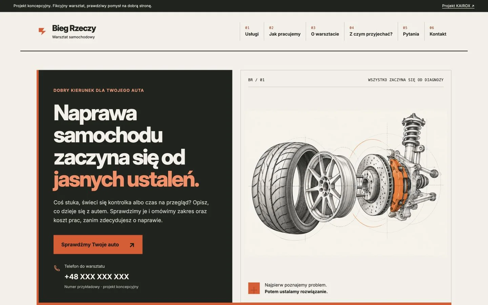

Projekt koncepcyjnyWarsztat samochodowy
Bieg Rzeczy
Strona warsztatu porządkuje usługi według objawów, wyjaśnia przebieg naprawy i prowadzi do zgłoszenia. Klient opisuje auto i problem w formularzu podzielonym na trzy kroki.
- Usługi opisane językiem objawów i potrzeb
- Osobne podstrony o warsztacie i przygotowaniu do wizyty
- Zgłoszenie problemu z autem w trzech krokach
